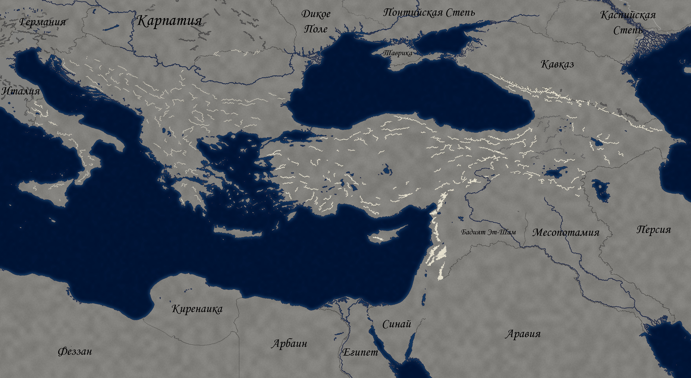

Вы — василевс ромеев. Город снова ваш, но вокруг — латиняне, болгары, сербы, сельджуки, а за горизонтом ждёт Карл Анжуйский. Через восемьдесят шесть лет придёт чума. Что останется от державы к тому дню?
Один ход — один сезон. Карта: перетаскивайте мышью, колесо — масштаб. Сохранение — в браузере.
